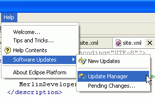
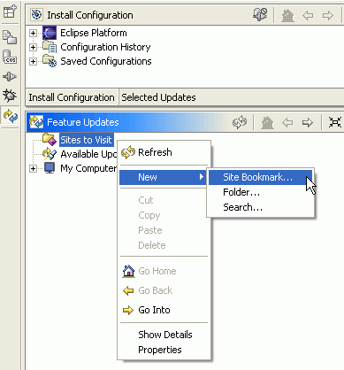
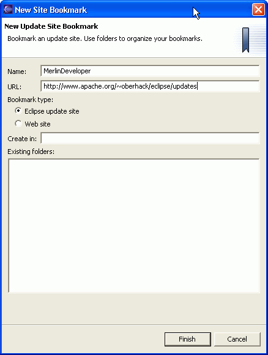
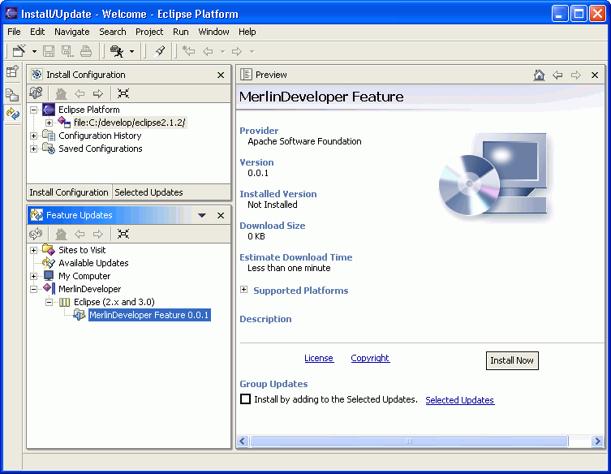

|
|
To install MerlinDeveloper in Eclipse 2.x, you have to open the Update Manger from the Help menue as shown below.

This will open the Update Manager perspective.
Here you should add the MerlinDeveloper Update Site by open the "New / Site Bookmark..." Dialog.

Please enter the Update Site as shown below.

Now this bookmark will be shown in the "Feature Updates" browser.

Pressing the install button will start the download process. After successfuly installed, you will be asked to restart the workbench.
After restart, you could check the installation as shown in the ".zip distribution" section.